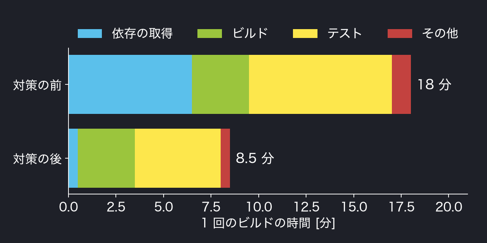

CI のビルド時間を
半分にした話
半分にした話
Example LT Night 2026/11
Taro Example
Taro Example
何が遅かったか
1 回 18 分のビルドを，1 日に 40 回待っていた
- 依存のインストールを，毎回ゼロからやり直していた
- テストを 1 本の流れで，順番に実行していた
- 待っている間に別の作業へ移り，戻るのが遅れる
やったこと
効果が大きく，手間の小さいものから順に
| 対策 | 短くなった時間 | 手間 |
|---|---|---|
| 依存のキャッシュ | −6 分 | 小 |
| テストの並列化（4 つ） | −3 分 | 中 |
| 使っていない手順の削除 | −0.5 分 | 小 |
短縮率は $r = \frac{T_{\rm before} - T_{\rm after}}{T_{\rm before}}$ で計算
18 分 → 8.5 分
1 回のビルドが 53% 短くなった

1 回のビルドの時間の内訳（各 100 回の中央値．架空）
まとめ
まず，どこで待っているかを測る
- キャッシュは，効果が大きく手間が小さい
- 並列化は，テストどうしが独立していることが前提
- 速くしても，失敗したときのやり直しが多いと意味が薄い
※ 数値はすべて架空